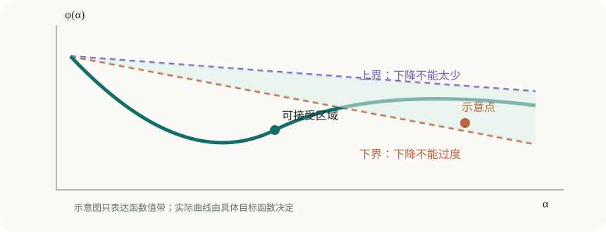

3.1.2 Goldstein 条件：用函数值夹住步长
一个步长可以下降得太少，也可以沿射线下降得过多，以至于一维极小点本身反而被排除。Goldstein 条件把这两个边界写成一对函数值不等式。
为什么要给下降量设上下界
设 φ(α)=f(xk+αpk)，且 φ′(0)=gkᵀpk<0。Armijo 条件只要求函数值低于一条下降直线，因此足够小的 α 通常会通过；但这并不保证步长有实质长度。Goldstein 的想法是：新函数值既不能高于“下降太少”的上界，也不能低于“下降过头”的下界。

Goldstein 条件的两侧边界
给定参数 0<c<1/2，候选 α 必须同时满足：
注意 φ′(0)<0，因此左边界数值更低，右边界数值更高。右侧不等式就是 Armijo 型充分下降；左侧不等式则阻止函数值比该线性模型预期的下降更多。因为不等式方向涉及负斜率，读公式时不能把上下界的数值顺序凭直觉写反。
它与 Wolfe 条件有什么不同
Wolfe 的曲率条件读取新点梯度沿 pk 的投影；Goldstein 则只读取 φ(α) 与 φ′(0)，不需要新点梯度。它们都试图排除过短步长，也都能建立相近的全局收敛理论，但筛选机制并不相同。
| 判据 | 检查量 | 主要作用 |
|---|---|---|
| Armijo | φ(α) | 足够下降；单独使用可能接受很短的步长 |
| Goldstein | φ(α) 的上下界 | 函数值下降不能太少，也不能过度 |
| Wolfe | φ(α) 与 φ′(α) | 充分下降并约束新点曲率 |
Goldstein 条件的一个重要代价是：它的下界可能排除 φ 的极小点。对保持正定 Hessian 近似的拟 Newton 方法，这通常不理想，因为曲率条件 ykᵀsk>0 对更新正定性很重要。Wolfe 曲率条件能直接给出这个正曲率信息。
一个被 Goldstein 排除的精确极小点
构造 φ(α)=19α³−28α²−α，α≥0。它满足 φ(0)=0、φ′(0)=−1，且 φ′(α)=57α²−56α−1 在 α=1 处为零；导数在 (0,1) 为负、在 (1,∞) 为正，因此 α=1 是正射线上的全局极小点，φ(1)=−10。
取 c=0.2，Goldstein 允许的函数值区间为 [−0.8,−0.2]，而极小点函数值 −10 低于下界，故精确极小点被排除。这个例子不是说 Goldstein 没有可接受步长，而是说明“满足 Goldstein”与“恰好取一维极小点”不是同一目标。
交互：候选步是否落在区间内
使用上面的三次函数，α=1 是精确极小点。拖动 α，观察 Goldstein 上下界；本例会直接显示为什么精确极小点可能不满足 Goldstein 条件。
实时计算
Python：可复现的数值检查
程序检查两个不等式的数值顺序，并验证 α=1 确实是正射线上的极小点，却因函数值过低而不满足 Goldstein。
"""Goldstein interval and an example whose exact line minimizer is excluded."""
def phi(alpha: float) -> float:
return 19.0 * alpha**3 - 28.0 * alpha**2 - alpha
def dphi(alpha: float) -> float:
return 57.0 * alpha**2 - 56.0 * alpha - 1.0
def goldstein(alpha: float, c: float = 0.2) -> tuple[bool, float, float]:
if not (0.0 < c < 0.5) or alpha <= 0.0:
raise ValueError("require 0 < c < 0.5 and alpha > 0")
slope0 = dphi(0.0)
lower = phi(0.0) + (1.0 - c) * alpha * slope0
upper = phi(0.0) + c * alpha * slope0
return lower <= phi(alpha) <= upper, lower, upper
if __name__ == "__main__":
accepted, lower, upper = goldstein(0.5)
minimizer_ok, min_lower, min_upper = goldstein(1.0)
print("alpha=0.5:", accepted, "interval =", (lower, upper), "phi =", phi(0.5))
print("alpha=1.0:", minimizer_ok, "interval =", (min_lower, min_upper), "phi =", phi(1.0))
assert dphi(0.0) == -1.0
assert dphi(1.0) == 0.0
assert phi(1.0) == -10.0
assert not minimizer_ok
assert phi(1.0) < min_lower思考：如果把 c 设为 0.5，Goldstein 的上下界会发生什么？为什么标准定义要求严格的 c<1/2？